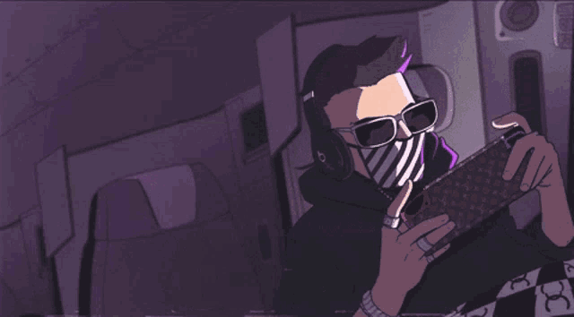

Desde el punto de vista de oficio, un gamer profesional es el que ingresa dinero por jugar a los videojuegos, mientras que un aficionado juega por pura diversión. Aunque la diversión y los ingresos económicos no están reñidos, percibir dinero por jugar es lo que distingue a un gamer de un usuario.
Los Gaming Center, enfocados a disponer equipos de PC para los jugadores, son un negocio que en otras latitudes demuestra rentabilidad, y su implementación implica desde unas decenas de equipos, hasta centenares. “BenQ patrocina varios de estos sitios.
Un gamer, por defecto, se sumerge en la cultura de los videojuegos, los eventos, la tecnología, el lenguaje, la comunidad. y, por supuesto, empieza a generar nuevos estilos de vida conforme su experiencia y conocimiento van ampliándose al de un expertise.

Somos una organismo sin fines de lucro, con el fin de traer informacion del mundo gaming, espectaculo,juegos y las ultimas noticias sobre gaming.
Con el fin de proveer informacion se subtrae informacion de distintos sitios web de organismos oficiales.
Los egames, deportes electrónicos o eSports (o e-sports) son competiciones o torneos de videojuegos de carácter competitivo en dónde se enfrentan varios jugadores en tiempo real para cumplir un objetivo.